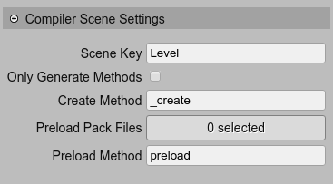
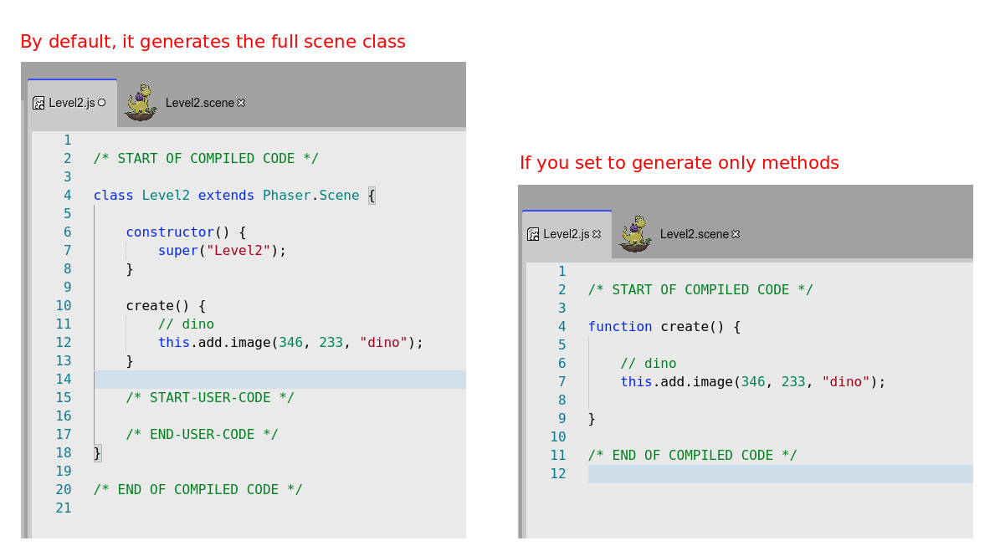
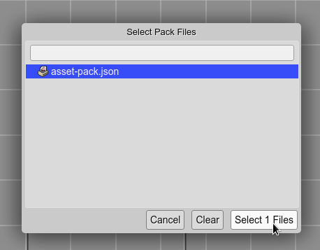

Scene settings
The compilation of a Phaser scene can be tweaked with the Compiler Scene Settings:
Scene Key: you can set the Phaser.Scene configuration key. Is optional.
Only Generate Methods: if checked, instead of generate a Phaser.Scene class, the compiler generates only the create and preload methods:
This could be useful if you want to create the objects using any context:
create.call(anySceneLikeContext);
Create Method: the compiler generates all the “creation code” in a method with the name you set in this parameter. By default, the name is
editorCreate. The first time you create a scene, it has acreatemethod that calls theeditorCreatemethod generated by the editor:/* START OF COMPILED CODE */ class Level2 extends Phaser.Scene { constructor() { super("Level2"); } editorCreate() { // dino const dino = this.add.image(346, 233, "dino"); // fields this.dino = dino; } /* START-USER-CODE */ // this is the method called by Phaser, // when the scene is created. create() { this.editorCreate(); // you can add more code here this.dino.setInteractive() .on("pointerdown", () => { // do something }); } /* END-USER-CODE */ } /* END OF COMPILED CODE */
Preload Pack Files: you can select the pack files to be loaded in the scene. If you click on the button, it opens the Select Pack Files dialog:

If you select to load a pack file, then the compiler generates a preload method:
class Level extends Phaser.Scene { preload() { this.load.pack("asset-pack", "assets/asset-pack.json"); } create() { // ... } }
Preload Method: like the Create Method, you can change the name of the preload method generated by the compiler. Then, you can write your own preload method and call the one of the editor.